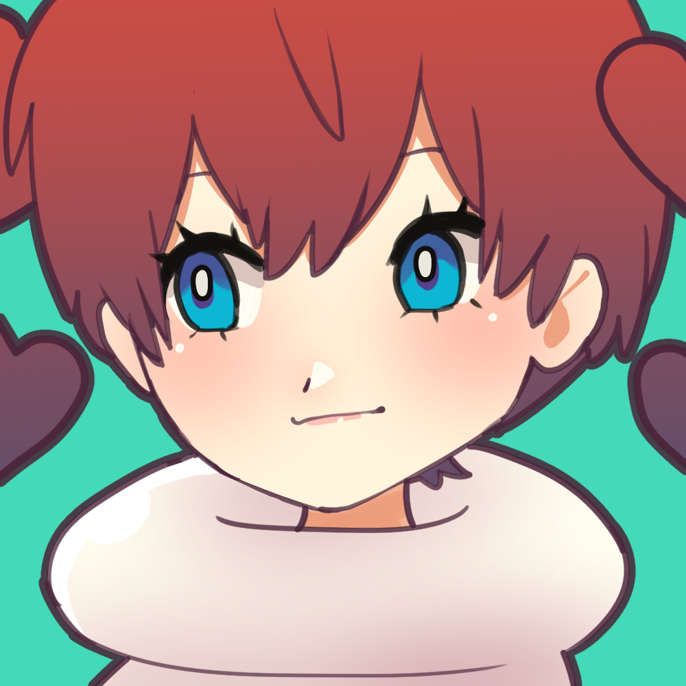
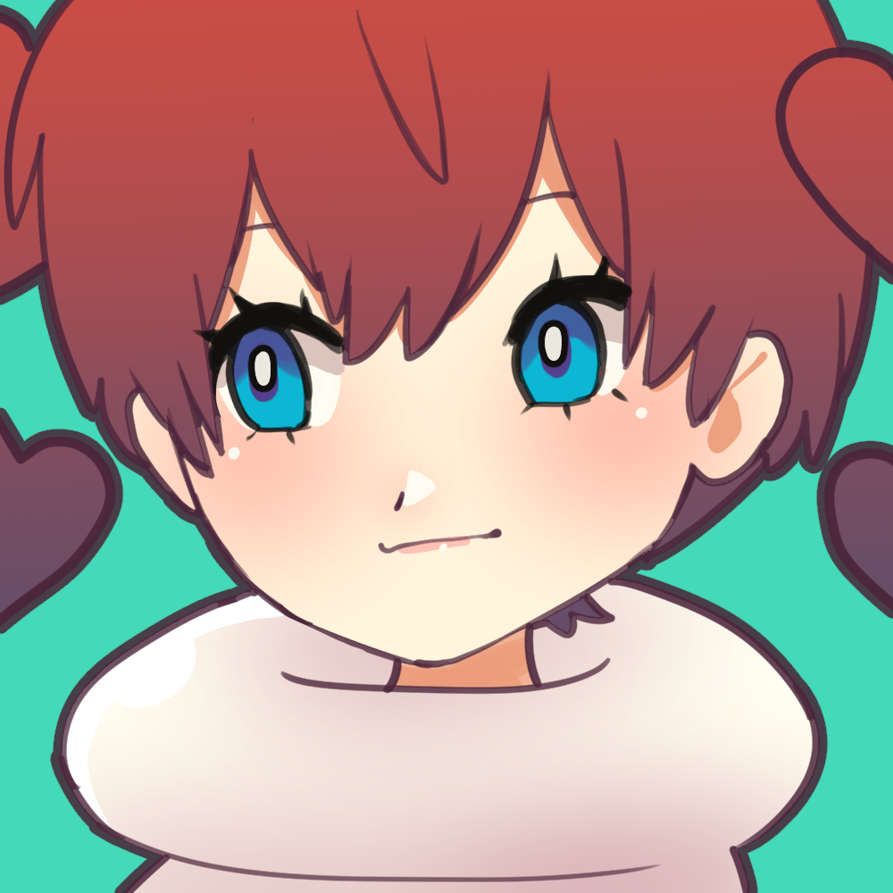
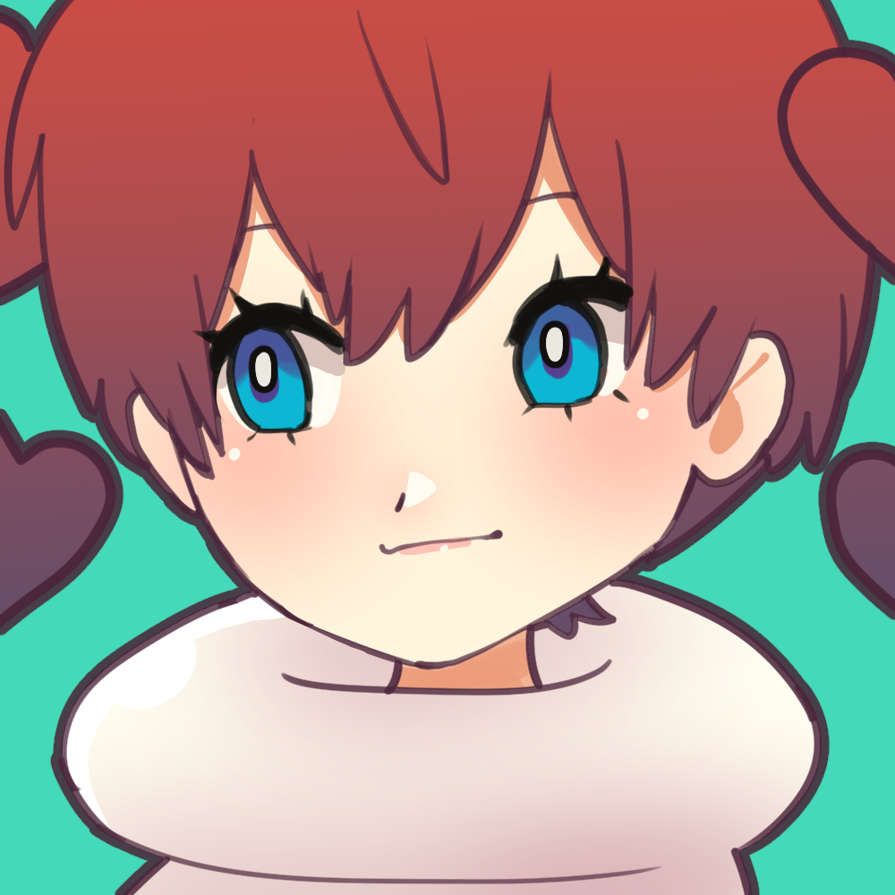
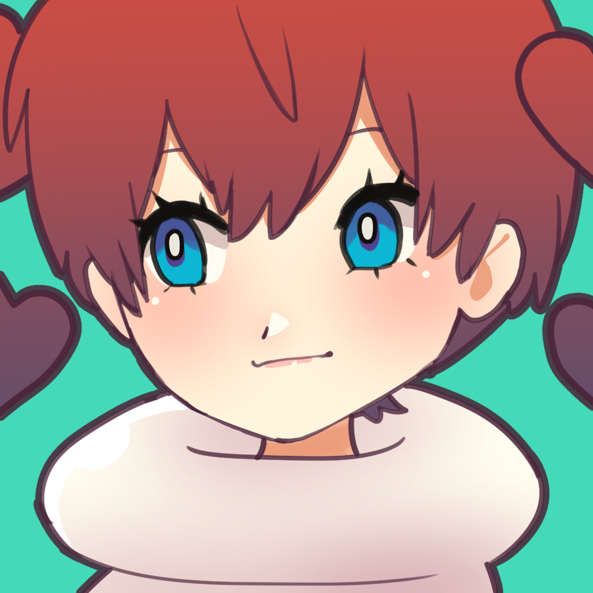

Hi! I'm Vanilla, and I create art and designs for Smart Doll/Dollfie Dream!

 



 


These eyes are made from glass domes with metallic print in 22mm! They are designed to fit "Anime Style" dolls such as Smart Doll and Dollfie Dream with a subtle follow-me effect.